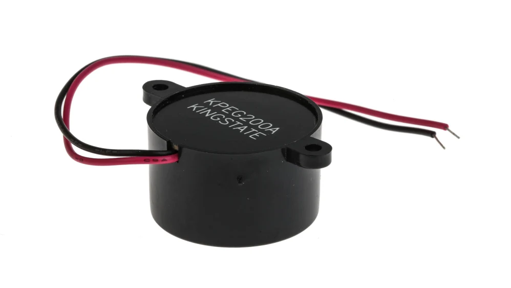

Les buzzers piézoélectriques
Qu'est ce qu'un buzzer piézoélectrique ?

En termes simples, un buzzer piézoélectrique est un appareil électronique utilisé pour produire une tonalité, une alarme ou un son.
Léger et de conception simple, il est généralement peu coûteux.
Cependant, selon ses spécifications en céramique piézoélectrique, il est également fiable et peut être fabriqué dans une large gamme de tailles, fonctionnant sur différentes fréquences pour produire différents niveaux sonores.